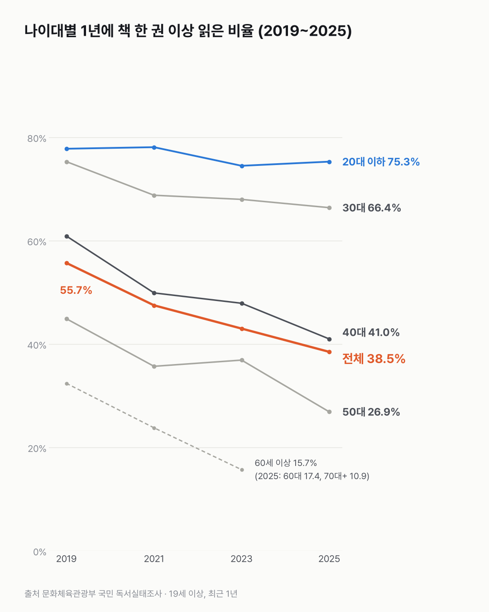
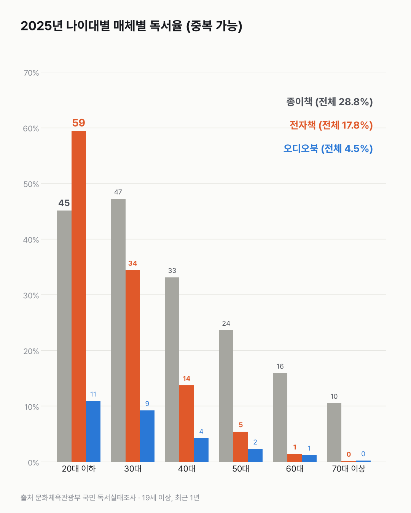

책 읽는 어른은 줄었는데, 20대 이하는 그대로예요
1년에 책을 한 권도 안 읽는 어른이 이제 더 많아요. 줄어든 건 20대보다 40~50대였어요.

- 1년에 책을 한 권이라도 읽은 성인은 2019년 55.7%, 2025년 38.5%예요.
- 20대 이하는 77.8%에서 75.3%로 거의 그대로예요.
- 크게 줄어든 건 40~50대예요. 40대는 60.9%에서 41.0%, 50대는 44.9%에서 26.9%가 됐어요.
책 이야기가 나오면 화살은 대개 젊은 사람에게 가요. 스마트폰만 본다는 말이 같이 따라오고요. 그래서 나이대별 칸을 하나씩 열어 봤어요.
20대 이하는 2019년 77.8%, 2025년 75.3%예요. 이건 좀 놀라웠어요. 나이대 중 가장 높고, 6년 동안 거의 움직이지 않았어요. 30대는 75.3%에서 66.4%가 됐어요.
많이 줄어든 건 40대와 50대예요. 40대는 60.9%에서 41.0%로, 50대는 44.9%에서 26.9%로 내려갔어요. 60세 이상은 2023년 15.7%였고, 2025년엔 60대 17.4%, 70대 이상 10.9%예요. 전체로는 55.7%에서 38.5%가 됐어요.
무엇으로 읽는지도 나이에 따라 달라요. 2025년 20대 이하는 전자책으로 읽은 사람(59.4%)이 종이책(45.1%)보다 많아요. 30대는 종이책 47.2%, 전자책 34.4%이고, 40대부터는 종이책이 훨씬 많아요. 오디오북은 20대 이하 10.9%, 전체 4.5%예요.
성별로는 남성이 더 많이 줄었어요. 남성은 55.1%에서 35.1%, 여성은 56.3%에서 41.9%예요.

웹소설이나 웹툰이 '책'에 들어가는지는 끝내 확인하지 못했어요. 40~50대가 읽기를 그만둔 건지, 다른 화면으로 옮겨 간 건지는 이 표로 가를 수 없었어요.
이 숫자는 어디서 왔나요
출처
어떻게 셌나요
- 종합 독서율은 최근 1년 동안 종이책·전자책·오디오북 중 하나로 1권 이상 읽거나 들은 성인(19세 이상)의 비율이에요.
- 2년마다 조사해요. 표본은 2019·2021년 6,000명, 2023·2025년 5,000명이에요.
- 나이 구분 이름이 2021년과 2023년 사이에 바뀌어(19~29세 → 20대 이하 등) 같은 구간끼리 묶었어요. 2025년부터는 60세 이상을 60대와 70대 이상으로 나눠 발표해요.
- 매체별 독서율은 2023·2025년 값만 있어요.
한계 5가지
이 데이터로 말할 수 없는 것
- '책'의 범위를 확인하지 못했어요. 어떤 책(교과서·수험서·만화·웹소설 등)이 들어가는지 문항 정의는 이 표로 확인하지 못했어요. 웹소설이나 웹툰이 빠진다면, 그쪽으로 옮겨 간 읽기는 여기 잡히지 않아요.
- 표본조사예요. 나이대별 표본은 700~1,000명 안팎이라 1~2%p 차이는 오차일 수 있어요.
- 2019년 이전과는 잇지 않았어요. 1993~2010년 '일반도서 독서율'은 정의가 달라 이어 붙이지 않았어요.
- 2025년 60세 이상은 나뉘어 발표돼서 2023년 이전과 같은 구간으로 비교할 수 없어요.
- 원인은 말하지 않아요. 책을 덜 읽는 것이 좋다·나쁘다는 판단도 하지 않아요.
새 글 나오면 받아 보기
피드 리더 앱에 이 사이트 주소를 한 번 넣어 두면, 새 글이 올라올 때 앱에 떠요. 가입이나 메일 주소는 필요 없어요.
받는 법 보기
- 피드 리더 앱을 하나 골라요. 새 글을 모아 보여 주는 앱이에요. 예를 들면 Feedly나 Inoreader가 있어요. 둘 다 무료고 웹·휴대폰에서 써요.
- 앱에서 '구독 추가'(+)를 누르고 아래 주소를 붙여 넣어요.
- 끝이에요. 새 글이 올라오면 앱 목록에 떠요.
https://protofu.github.io/opendata-insight/feed.xmlFeedly를 쓴다면 여기를 눌러 바로 추가할 수도 있어요.